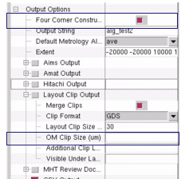

You can use the
Calibre Metrology Interface to construct a complete square shape
constructed from clips of the four corners of your layout, starting
from the SEM/OM marker position. OM/SEM markers are typically positioned
at the origin X1, Y1 of the layout (the lower left corner). The
upper-right quarter of the clip is placed inside the design while
the other three portions are placed outside and are empty.
Refer to Figure 2 for an illustration.
Procedure
- In Calibre WORKbench, add
a new marker by performing a Ctrl + double-left-click in the loaded
layout to invoke the New Marker dialog box (see “Marker Operations”). The markers can also be loaded from
sample plan (.csv or .ss) files during assembly.
- For each of these markers,
specify that they use either the SEM_align or OM_align algorithms.
This can be specified in the New Marker dialog box, be previously
set in the sample plan, or it can be edited in the Sites table.
- In the Calibre Metrology Interface,
click Four Corner Construction.
- Define the extent field in
the Extent text entry field and the clip size value in the OM Clip
Size entry field. The design extent is defined as two coordinates: the
first coordinate value defines the lower left corner of the layout
and the second coordinate defines the upper right corner.
Figure 1. Options to Specify
Four Corner Construction
- Click Generate Output. Figure 2 illustrates the process that follows.
Figure 2. Four Corner Construction
The corner clipping begins
from the OM/SEM marker position X1, Y1. The size of the upper right
quarter of the desired square is determined is calculated from the center
of the marker.
CMi calculates the position
of the other three clips as follows:
- The lower-left corner of the
clip calculations include:
Clip 2: X1 + X extent ,
Y1
Clip 3: X1 + X extent,
Y1 + Y extent
Clip 4: X1, Y1 + Y extent
- CMi calculates the clip extent
by using the lower left corner position and the clip size.
- CMi places clips 2, 3 and
4 around the SEM/OM clip to construct the four-corner box.